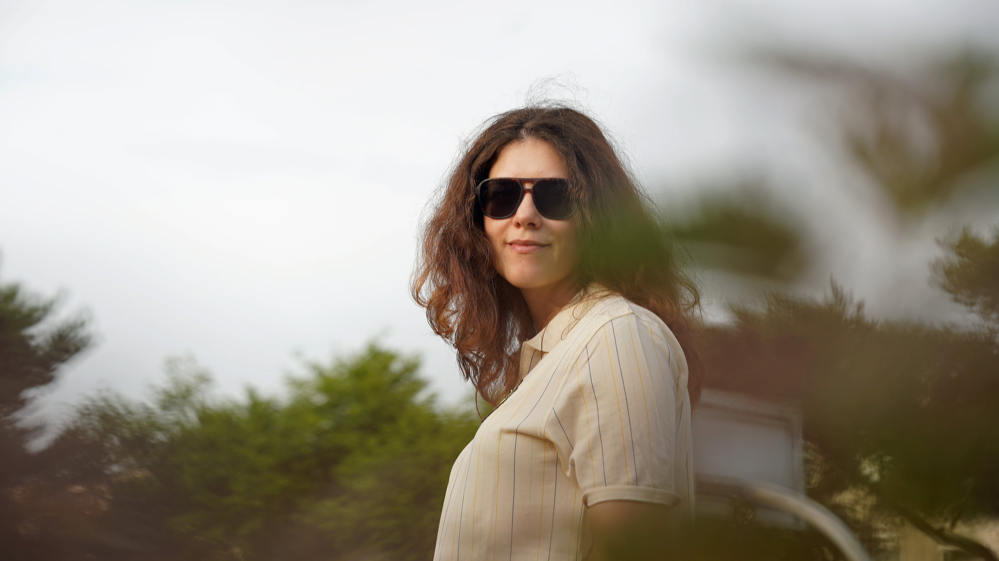

Visual stories by Rodrigue
Photography, people, places & moments worth remembering.
RobaLens. is my creative space for sharing portraits, lifestyle moments, events, and the small stories I capture through my lens.
Latest collection
Lifestyle moments
Click to view a few recent shots.
About
Personal visual stories
I started carrying a camera because I enjoyed documenting the people and moments around me. Over time, photography became a way to slow down, notice details, and tell stories without needing too many words.
This website is not a shop or a booking page. It is a place where I collect my favorite images, experiments, memories, and creative progress.

Portfolio
Collections
Browse the different kinds of moments I enjoy capturing.
Collection 01
Lifestyle
A small collection of relaxed portraits, everyday scenes, and spontaneous moments. Swipe or scroll sideways to explore.



Collection 02
Portraits
Portrait work will live here soon. For now, this section is a reminder to keep experimenting with light, expression, and personality.
Collection 03
Events
Event stories will be added here as the collection grows — birthdays, gatherings, celebrations, and real moments with people.